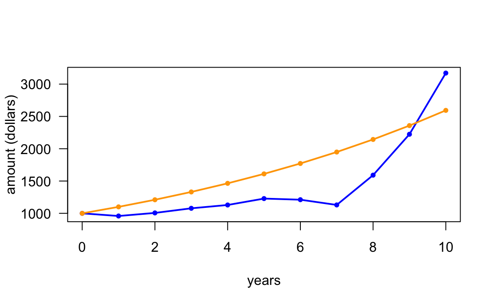

14 Iterations: For Loop
In the previous chapter you got introduced to conditional statements, better known as if-else statements. In this chapter we introduce another common programming structure known as iterations. Simply put iterative procedures commonly referred to as loops, allow you to repeat a series of common steps.
14.1 Motivation
Say you decide to invest $1000 in an investment fund that tracks the performance of the total US stock market. This type of financial asset, commonly referred to as a total stock fund is a mutual fund or an exchange traded fund (ETF) that holds every stock in a selected market. The purpose of a total stock fund is to replicate the broad market by holding the stock of every security that trades on a certain exchange. From the investing point of view, these funds are ideal for investors who want exposure to the overall equity market at a very low cost.
Examples of such funds are:
VTSAX: Vanguard Total Stock Market Index Fund
FSKAX: Fidelity Total Stock Market Index Fund
SWTSX: Schwab Total Stock Market Index Fund
As we were saying, you decide to invest $1000 in a total stock market index fund (today).
How much money would you expect to get in 10 years?
If we knew the annual rate of return, we could use the future value formula (of compound interest)
\[ \text{FV} = \$1000 \times (1 + r)^{10} \]
The problem, or the “interesting part”—depending on how you want to see it—is that total stock funds don’t have a constant annual rate of return. Why not? Well, because the stock market is volatile, permanently moving up and down every day, with prices of stocks fluctuating every minute.
Despite the variability in prices of stocks, it turns out that in most (calendar) years, the annual return is positive. But not always. There are some years in which the annual return can be negative.
14.1.1 US Stock Market Historical Annual Returns
We can look at historical data to get an idea of the average annual return for investing in the total US stock market. One interesting resource that gives a nice perspective of the historical distribution of US stock market returns comes from amateur investor Joachim Klement
https://klementoninvesting.substack.com/p/the-distribution-of-stock-market
Figure 14.1: Distribution of Annual Returns (by Joachim Klement)
As you can tell, on an annual scale, market returns are basically random and follow the normal distribution fairly well.
So let us assume that annual rates of return for the total US Stock Market have a Normal distribution with mean \(\mu = 10\%\) and standard deviation \(\sigma = 18\%\).
Mathematically, we can write something like this:
\[ r_t \sim \mathcal{N}(\mu = 0.10, \ \sigma = 0.18) \]
where \(r_t\) represents the annual rate of return in any given year \(t\).
This means that, on average, we expect 10% return every year. But a return between 28% = 10% + 18%, and -2% = 10% - 18%, it’s also a perfectly reasonable return in every year.
In other words, there is nothing surprising if you see years where the return is any value between -2% and 28%.
Admittedly, we don’t know what’s going to happen with the US Stock Market in the next 10 years. But we can use our knowledge of the long-term regular behavior of the market to guesstimate an expected return in 10 years. If we assume that the (average) annual return for investing in a total market index fund is 10%, then we could estimate the expected future value as:
\[ \textsf{expected } \text{FV} = \$ 1000 \times (1 + 0.10)^{10} = \$ 2593.742 \]
Keep in mind that one of the limitations behind this assumption is that we are not taking into account the volatility of the stock market. This is illustrated in the following figure that compares a theoretical scenario with constant 10% annual returns, versus a plausible scenario with variable returns in each year.
Figure 14.2: Rates of Return: Fixed -vs- Variable
14.2 Simulating Normal Random Numbers
Because the stock market is volatile, we need a way to simulate random rates
of return. The good news is that we can use rnorm() to simulate generating
numbers from a Normal distribution. By default, rnorm() generates a random
number from a standard normal distribution (mean = 0, standard deviation = 1)
set.seed(345) # for replication purposes
rnorm(n = 1, mean = 0, sd = 1)
#> [1] -0.7849082Here’s how to simulate three rates from a Normal distribution with mean \(\mu = 0.10\) and \(\sigma = 0.18\)
rates = rnorm(n = 3, mean = 0.10, sd = 0.18)
rates
#> [1] 0.04968742 0.07093758 0.0476926214.2.1 Investing in the US stock market during three years
To understand what could happen with your investment, let’s focus on a three year horizon. For each yar, we need a random rate of return \(r_t\) (\(t\) = 1, 2, 3)
Figure 14.3: Random rates of return following a normal distribution
As we mentioned, we can use rnorm() to generate three random rates of return
from a normal distribution with \(\mu = 0.10\) and \(\sigma = 0.18\)
# inputs, consider investing during three years
set.seed(345) # for replication purposes
amount0 = 1000
rates = rnorm(n = 3, mean = 0.10, sd = 0.18)
rates
#> [1] -0.04128347 0.04968742 0.07093758With these rates, we can then calculate the amounts in the investment fund that we could expect to have at the end of each year:
# output: balance amount at the end of each year
amount1 = amount0 * (1 + rates[1])
amount2 = amount1 * (1 + rates[2])
amount3 = amount2 * (1 + rates[3])
c(amount1, amount2, amount3)
#> [1] 958.7165 1006.3527 1077.7409Notice the common structure in the commands used to obtain an amount value.
Moreover, notice that we are repeating the same operation three times.
At this point you may ask yourself whether we could vectorize this code. Let’s
see if we can:
# vectorized attempt 1
amounts = amount0 * (1 + rates)
amounts
#> [1] 958.7165 1049.6874 1070.9376If we use the vector rates, we obtain some amounts but these are not the
values that we are looking for.
What if we vectorize both rates and years 1:3?
# vectorized attempt 2
amounts = amount0 * (1 + rates)^(1:3)
amounts
#> [1] 958.7165 1101.8437 1228.2661Once again, we obtain some amounts but these are not the values that we are
looking for.
Can you see why the above vectorized code options fail to capture the correct compounding return?
14.2.2 Investing during ten years
Let’s expand our time horizon from three to ten years, generating random rates of return for each year, and calculating a simulated amount year by year:
set.seed(345) # for replication purposes
amount0 = 1000
rates = rnorm(n = 10, mean = 0.10, sd = 0.18)
amount1 = amount0 * (1 + rates[1])
amount2 = amount1 * (1 + rates[2])
amount3 = amount2 * (1 + rates[3])
amount4 = amount3 * (1 + rates[4])
amount5 = amount4 * (1 + rates[5])
amount6 = amount5 * (1 + rates[6])
amount7 = amount6 * (1 + rates[7])
amount8 = amount7 * (1 + rates[8])
amount9 = amount8 * (1 + rates[8])
amount10 = amount9 * (1 + rates[10])Note: we know that this is too repetitive, time consuming, boring and error prone. Can you spot the error?
14.3 Iterations to the Rescue
Let’s first write some “inefficient” code in order to understand what is going on at each step.
amount1 = amount0 * (1 + rates[1])
amount2 = amount1 * (1 + rates[2])
amount3 = amount2 * (1 + rates[3])
amount4 = amount3 * (1 + rates[4])
# etcWhat do these commands have in common?
They all take an input amount, that gets compounded for one year at a certain rate. The output amount at each step is used as the input for the next amount.
Instead of calculating a single amount at each step, we can start with
an almost “empty” vector amounts(). This vector will contain the initial
amount, as well as the amounts at the end of every year.
set.seed(345) # for replication purposes
amount0 = 1000
rates = rnorm(n = 10, mean = 0.10, sd = 0.18)
# output vector (to be populated)
amounts = c(amount0, double(length = 10))
# repetitive commands
amounts[2] = amounts[1] * (1 + rates[1])
amounts[3] = amounts[2] * (1 + rates[2])
# etc ...
amounts[10] = amounts[9] * (1 + rates[9])
amounts[11] = amounts[10] * (1 + rates[10])From the commands in the previous code chunk, notice that at step s, to
compute the next value amounts[s+1], we do this:
amounts[s+1] = amounts[s] * (1 + rates[s])This operation is repeated 10 times (one for each year). At the end of the
computations, the vector amounts contains the initial investment, and the 10
values resulting from the compound return year-by-year.
14.4 For Loop Example
One programming structure that allows us to write code for carrying out these repetitive steps is a for loop, which is one of the iterative control flow structures in every programming language.
In R, a for() loop has the following syntax
for (s in 1:10) {
amounts[s+1] = amounts[s] * (1 + rates[s])
}You use the
forstatementInside parenthesis, you specify three ingredients separated by blank spaces:
an auxiliary iterator, e.g.
sthe keyword
ina vector to iterate through, e.g.
1:10
The code for the repetitive steps gets wrapped inside braces
Let’s take a look at the entire piece of code:
set.seed(345) # for replication purposes
amount0 = 1000
rates = rnorm(n = 10, mean = 0.10, sd = 0.18)
# output vector (to be populated)
amounts = c(amount0, double(length = 10))
# for loop
for (s in 1:10) {
amounts[s+1] = amounts[s] * (1 + rates[s])
}
amounts
#> [1] 1000.0000 958.7165 1006.3527 1077.7409 1129.1412
#> [6] 1228.3298 1211.0918 1129.9604 1590.9151 2223.8740
#> [11] 3170.9926There are a couple of important things worth noticing:
You don’t need to declare or create the auxiliary iterator outside the loop
R will automatically handle the auxiliary iterator (no need to explicitly increase its value)
The length of the “iterations vector” determines the number of times the code inside the loop has to be repeated
You use for loops when you know how many times a series of calculations need to be repeated.
Having obtained the vector of amounts, we can then plot a timeline to
visualize the behavior of the simulated returns against the hypothetical
investment with a constant rate of return:
# random annual rates of return (blue)
plot(0:10, amounts, type = "l", lwd = 2, col = "blue",
xlab = "years", ylab = "amount (dollars)", las = 1)
points(0:10, amounts, col = "blue", pch = 20)
# assuming constant 10% annual return (orange)
lines(0:10, amount0 * (1+0.10)^(0:10), col = "orange", lwd = 2)
points(0:10, amount0 * (1+0.10)^(0:10), col = "orange", pch = 20)
14.5 About For Loops
To describe more details about for loops in R, let’s consider a super simple
example. Say you have a vector vec <- c(3, 1, 4), and suppose you want to add
1 to every element of vec. You know that this can easily be achieved using
vectorized code:
vec <- c(3, 1, 4)
vec + 1
#> [1] 4 2 5In order to learn about loops, I’m going to ask you to forget about the notion of vectorized code in R. That is, pretend that R does not have vectorized functions.
Think about what you would need to do in order to add 1 to the elements
in vec. This addition would involve taking the first element in vec and
add 1, then taking the second element in vec and add 1, and finally the third
element in vec and add 1, something like this:
vec[1] + 1
vec[2] + 1
vec[3] + 1The code above does the job. From a purely arithmetic standpoint, the three
lines of code reflect the operation that you would need to carry out to add
1 to all the elements in vec.
From a programming point of view, you are performing the same type of operation
three times: selecting an element in vec and adding 1 to it. But there’s
a lot of (unnecessary) repetition.
This is where loops come very handy. Here’s how to use a for () loop
to add 1 to each element in vec:
vec <- c(3, 1, 4)
for (j in 1:3) {
print(vec[j] + 1)
}
#> [1] 4
#> [1] 2
#> [1] 5In the code above we are taking each vec element vec[j], adding 1 to it,
and printing the outcome with print() so you can visualize the additions
at each iteration of the loop.
What if you want to create a vector vec2, in which you store the values
produced at each iteration of the loop? Here’s one possibility:
vec <- c(3, 1, 4) # you can change these values
vec2 <- rep(0, length(vec)) # vector of zeros to be filled in the loop
for (j in 1:3) {
vec2[j] = vec[j] + 1
}14.5.1 Anatomy of a For Loop
The anatomy of a for loop is as follows:
for (iterator in times) {
do_something
}for() takes an iterator variable and a vector of times to iterate
through.
value <- 2
for (i in 1:5) {
value <- value * 2
print(value)
}
#> [1] 4
#> [1] 8
#> [1] 16
#> [1] 32
#> [1] 64The vector of times does NOT have to be a numeric vector; it can be any vector
value <- 2
times <- c('one', 'two', 'three', 'four')
for (i in times) {
value <- value * 2
print(value)
}
#> [1] 4
#> [1] 8
#> [1] 16
#> [1] 32However, if the iterator is used inside the loop in a numerical computation, then the vector of times will almost always be a numeric vector:
set.seed(4321)
numbers <- rnorm(5)
for (h in 1:length(numbers)) {
if (numbers[h] < 0) {
value <- sqrt(-numbers[h])
} else {
value <- sqrt(numbers[h])
}
print(value)
}
#> [1] 0.6532667
#> [1] 0.4728761
#> [1] 0.8471168
#> [1] 0.9173035
#> [1] 0.358269814.5.2 For Loops and Next statement
Sometimes we need to skip a loop iteration if a given condition is met, this
can be done with the next statement
for (iterator in times) {
expr1
expr2
if (condition) {
next
}
expr3
expr4
}Example:
x <- 2
for (i in 1:5) {
y <- x * i
if (y == 8) {
next
}
print(y)
}
#> [1] 2
#> [1] 4
#> [1] 6
#> [1] 1014.5.3 For Loops and Break statement
Sometimes we need to stop a loop from iterating if a given condition is met,
this can be done with the break statement
for (iterator in times) {
expr1
expr2
if (stop_condition) {
break
}
expr3
expr4
}Example:
x <- 2
for (i in 1:5) {
y <- x * i
if (y == 8) {
break
}
print(y)
}
#> [1] 2
#> [1] 4
#> [1] 614.5.4 Nested Loops
It is common to have nested loops
for (iterator1 in times1) {
for (iterator2 in times2) {
expr1
expr2
...
}
}Example: Nested loops
Consider a matrix with 3 rows and 4 columns
# some matrix
A <- matrix(1:12, nrow = 3, ncol = 4)
A
#> [,1] [,2] [,3] [,4]
#> [1,] 1 4 7 10
#> [2,] 2 5 8 11
#> [3,] 3 6 9 12Suppose you want to transform those values less than 6 into their reciprocals (that is, dividing them by 1). You can use a pair of embedded loops: one to traverse the rows of the matrix, the other one to traverse the columns of the matrix:
# reciprocal of values less than 6
for (i in 1:nrow(A)) {
for (j in 1:ncol(A)) {
if (A[i,j] < 6) A[i,j] <- 1 / A[i,j]
}
}
A
#> [,1] [,2] [,3] [,4]
#> [1,] 1.0000000 0.25 7 10
#> [2,] 0.5000000 0.20 8 11
#> [3,] 0.3333333 6.00 9 1214.5.5 About for Loops and Vectorized Computations
R loops have a bad reputation for being slow.
Experienced users will tell you: “tend to avoid
forloops in R” (me included).It is not really that the loops are slow; the slowness has more to do with the way R handles the boxing and unboxing of data objects, which may be a bit inefficient.
R provides a family of functions that are usually more efficient than loops (i.e.
apply()functions).If you have NO programming experience, you should ignore any advice about avoiding loops in R.
You should learn how to write loops, and understand how they work; every programming language provides some type of loop structure.
In practice, many (programming) problems can be tackled using some loop structure.
When using R, you may need to start solving a problem using a loop. Once you solved it, try to see if you can find a vectorized alternative.
It takes practice and experience to find alternative solutions to
forloops.There are cases when using
forloops is not that bad.